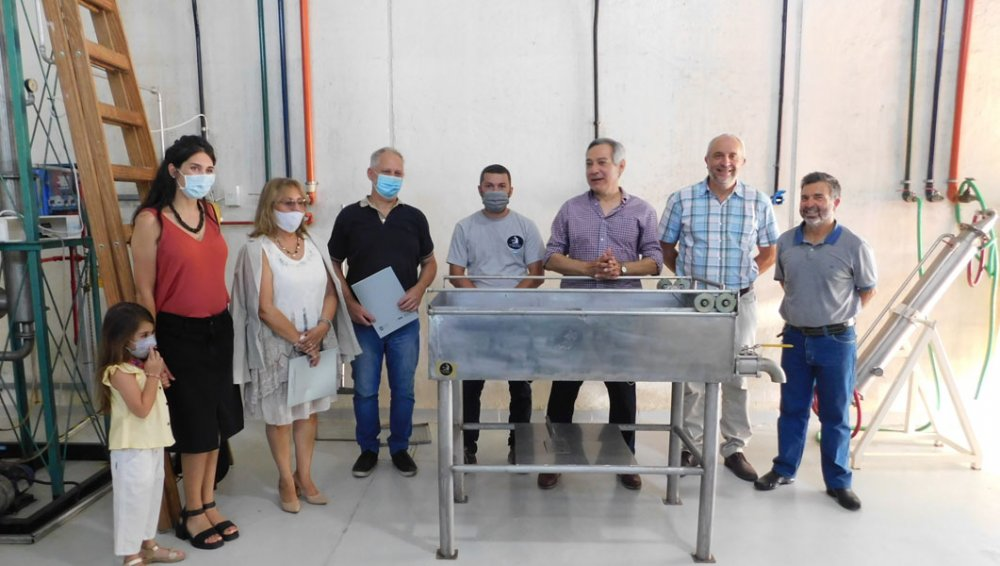
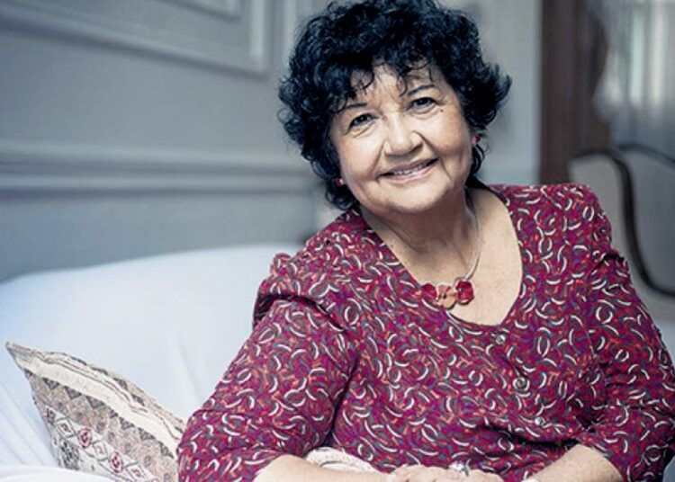

PRINCIPAL
La UNSL aprobó su Calendario Académico 2022

INSTITUCIONAL
La Planta Piloto de la FICA se potencia con un nuevo elemento de estudio

ENTREVISTAS
Dora Barrancos: «Hay un feminismo que se apega a erradicar la desigualdad humana»